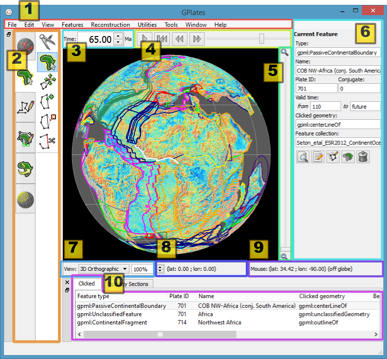
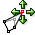

This section describes the Main Window, the heart of the GPlates user interface. Below we present annotated screenshots of GPlates, label the key areas of the window, and provide a brief overview of each.
The Main Window
When you start GPlates, the first window you will encounter is the Main Window. This contains your view of the globe, and is the starting-point of all tasks within GPlates. It is here that you can control your view of the globe, choose your reconstruction time, load and unload data, and interact with geological features.

| Item | Name | Description |
|---|---|---|
| 1 | Menu Bar | This region of the Main Window contains the titles of the menus. |
| 2 | Tool Palette | A collection of tools which are used to interact with the globe and geological features via the mouse pointer. |
| 3 | Time Controls | A collection of user-interface controls for precise control of the reconstruction time. |
| 4 | Animation Controls | A collection of tools to manipulate the animation of reconstructions. |
| 5 | Zoom Slider | A mouse-controlled slider which controls the zoom level of the Globe View camera. |
| 6 | Task Panel | Task-specific information and controls which correspond to the currently-activated tool. |
| 7 | View Control | Controls which projection is used to display data and the exact zoom level as a percentage. |
| 8 | Camera Coordinate | An information field which indicates the current globe position of the Globe View camera. |
| 9 | Mouse Coordinate | An information field which indicates the current globe position of the mouse pointer. |
| 10 | Clicked Geometry Table | Displays a summary of each geometry or feature touched by the last mouse click. |
|
|
The appearance of the Main Window - particularly the layout of the different window components - will change as GPlates continues to evolve. |
Reconstruction View
The reconstruction view provides the user with a display of their data on the GPlates globe or map reconstructed to a moment in time. Control of the current reconstruction time, is located under the menu bar on the left, (see image below). The time can be controlled by both a text field, forwards and backwards time buttons, and the animation slider. In addition the shortcut Ctrl+T to enter a time value in the text field.

Camera Control
When the
 Drag Globe tool is activated the GPlates globe can be re-oriented freely using the mouse with a simple click and drag motion. If another tool is selected the globe can still be dragged by holding down
Drag Globe tool is activated the GPlates globe can be re-oriented freely using the mouse with a simple click and drag motion. If another tool is selected the globe can still be dragged by holding down Ctrl.
If the user wishes to adjust the camera position to a particular latitude and longitude, pressing Ctrl+Shift+L will pop up a window allowing manual entry of coordinates.
The amount of camera zoom can be controlled by the following:
-
Zoom In via mouse-wheel up.
-
Zoom Out via mouse-wheel down.
-
Zoom Control field allowing direct entry of percentage value (between 100% and 10000%). Click the text field, type in a new value and press Enter to change the zoom.
-
Zoom Slider, which works on a power scale.
-
Keyboard shortcuts: use the + and - keys to zoom in and out, and the 1 key to reset the zoom level to 1:1 (100%) scale.
The position of the camera and mouse pointer are provided along the bottom of the reconstruction view.
The Menu Bar
Each item in a menu is an operation. Related operations are grouped into menus, with the menu title indicating the common theme. For example, the View Menu in the image below contains operations which manipulate the user’s view of the globe. Within a menu, similar operations are grouped visually by horizontal lines or within sub-menus. In the View Menu below, the Camera Location, Camera Rotation, and Camera Zoom controls are grouped into their own sub-menus.

Some menu items use check boxes or tick marks to switch or choose operations. For example; Show Bottom Panel in the Window menu is activated by a small cross or tick that will be displayed next to the menu item when selected.
Tool Palette
The Tool Palette is used to control your view and interaction with the GPlates globe and maps. You may recognise the concept of tools from graphics editing software (e.g. drawing tools in Photoshop ) or GIS software (e.g. ArcGIS mapping tools).
The Tool Palette includes camera positioning tools, feature selection tools and drawing tools. A tool is activated by clicking on it; only one tool can be active at any time. The task panel will reflect the current tool that is activated.
Icon |
Tool |
Shortcut |
Operation |
|
Drag Globe |
D |
Drag to re-orient the globe. |
|
Zoom In |
Z |
Click to zoom in. |
|
Measure |
S |
Click to measure distance between points, or measure the selected feature’s geometry |
|
Choose Feature |
F |
Click a geometry to choose a feature. |
|
Digitise Polyline Geometry |
L |
Click to draw a new vertex. |
|
Digitise Multi-point Geometry |
M |
Click to draw a new point. |
|
Digitise Polygon Geometry |
G |
Click to draw a new vertex. |
 |
Move Vertex |
V |
Drag to move a vertex of the current feature. You can still drag the globe around |
|
Insert Vertex |
I |
Insert a new vertex into the feature geometry |
|
Delete Vertex |
X |
Remove a vertex from a multi-point, polyline or polygon geometry |
|
Split Feature |
T |
Click to split the geometry of the selected feature at a point to create two features |
|
Move Pole |
O |
Change the pole location used by the Modify Reconstruction Pole tool |
|
Modify Reconstruction Pole |
P |
Drag or |
|
Build New Line Topology |
H |
Create a new dynamic polyline (for use as a section in a dynamically closing plate polygon) by adding sections of other features that define a line |
|
Build New Boundary Topology |
B |
Create a new dynamically closing plate polygon by adding sections of other features (and dynamic polylines) that define a boundary |
|
Edit Topology Sections |
E |
Edit the selected topological feature’s sections |
|
Create Small Circle |
C |
Create small circles using mouse to define centre and radii, or enter manually, or generate centre from a stage pole |
The tools are arranged into groups (tabs in the Tool Palette). For example the Digitisation group is used when digitising new geometries and the Feature Inspection group is used when querying existing features. Some tools appear in more than one group. For example the Move Vertex tool appears in both the Digitisation and Feature Inspection groups since it is used in the Digitisation group to modify newly digitised geometries and it is used in the Feature Inspection group to modify geometries of existing features.

The availability of certain tools within a group can change depending on what you currently have selected. For instance, the Modify Reconstruction Pole tool can only be used once a feature to be modified has been selected with the Choose Feature tool.
The tools are also accessible via the Tools menu which also shows the shortcut key for each tool. The Tools menu also contains a check box Use Small Icons that reduces the size of the tool icons in the Tool Palette. This is useful if your screen resolution is low enough to force the bottom tools off the screen - this can happen if you are using a low-resolution screen projector.
List of Menu Operations
-
A description of the operations within each menu will be explained in further detail in their respective chapters.
-
Shortcut keys are listed beside some menu items. On Mac OS, please substitute the
Command(⌘) key in place ofCtrl.
|
|
Clicking on a menu item from the list below will take you to the appropriate chapter for further information |
File
-
Open Feature Collection
[Ctrl+O] -
Connect WFS
-
Manage Feature Collections
[Ctrl+M] -
Quit
[Ctrl+Q]
Edit
-
Undo
[Ctrl+Z] -
Redo
[Ctrl+Y] -
Query Feature
[Ctrl+R] -
Edit Feature
[Ctrl+E] -
Delete Feature
[Delete]Deletes the currently chosen feature and removes it from the feature collection that contained it. Note that the feature collection is marked as modified but is not automatically saved to file (see the Loading And Saving chapter).
-
Preferences
[Ctrl+Comma]
View
-
-
Set Location
[Ctrl+Shift+L] -
Move Up
-
Move Down
-
Move Left
-
Move Right
-
-
-
Rotate Clockwise
[]] -
Rotate Anti-clockwise
[[] -
Reset Orientation
[^]
-
-
-
Set Zoom
-
Zoom In
-
Zoom Out
-
Reset Zoom
-
-
Configure Text Overlay
-
Configure Graticules
-
Choose Background Colour
-
Show Stars
-
Geometry Visibility
-
Show Point Geometries
-
Show Line Geometries
-
Show Polygon Geometries
-
Show Multipoint Geometries
-
Show Arrow Decorations
-
Features
Reconstruction
-
Reconstruct to Time
[Ctrl+T] -
Step Backward One Frame
[Ctrl+Shift+I] -
Step Forward One Frame
[Ctrl+I] -
Specify Anchored Plate ID
[Ctrl+D] -
View Total Reconstruction Poles
[Ctrl+P]
Utilities
-
Calculate Reconstruction Pole
-
Open Python Console
[F12]
Tools
-
Use Small Icons
-
Drag Globe
[D] -
Zoom In
[Z] -
Measure
[S] -
Choose Feature
[F] -
Move Geometry
[Y] -
Move Vertex
[V] -
Insert Vertex
[I] -
Delete Vertex
[X] -
Split Feature
[T]
Window
-
Open New Window
[Ctrl+N]Creates a new instance of GPlates. Currently each instance created this way is completely separate with its own main window and dialogs. Any program state such as files loaded prior to selecting New Window is not transferred across to the new instance. This feature is useful mainly for Mac OS X where it is not possible to run multiple instances of the same application from the Finder.
-
Show Layers
[Ctrl+L] -
Log
-
Full Screen
[F11]
Help
-
View Online Documentation
-
About